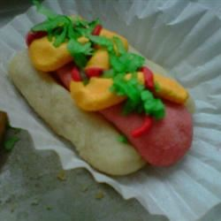

These little treasures look just like little hot dogs! Perfect for children's parties or sporting events.
In a medium bowl, cream together the butter, confectioners' sugar and vanilla until smooth. Stir in the flour until dough is smooth. Remove 1 cup of dough, then cover and refrigerate remaining dough. Knead the red food coloring into the 1 cup of dough until the color of a hot dog is achieved. Refrigerate all dough for 1 hour.
Preheat oven to 350 degrees F (175 degrees C). Divide the red dough into 16 portions. Roll each piece into a 2 1/2 inch long sausage shape. For buns, divide the white dough into 16 portions and shape into 3 inch logs. Slice them almost in half lengthwise. Spread the buns open and place the hot dog doughs inside, leaving buns open. Place 2 inches apart onto ungreased cookie sheets.
Bake for 12 to 15 minutes in the preheated oven, or until firm. Remove from cookie sheets to cool. In a small jar or plastic bag, combine the coconut and green food coloring. Shake until coconut is evenly colored. Sprinkle over hot dog cookies when cool and make a zig zag with the yellow frosting for mustard.